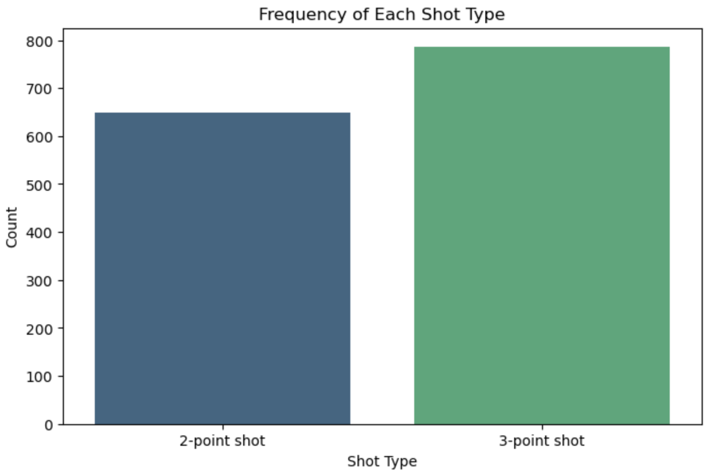
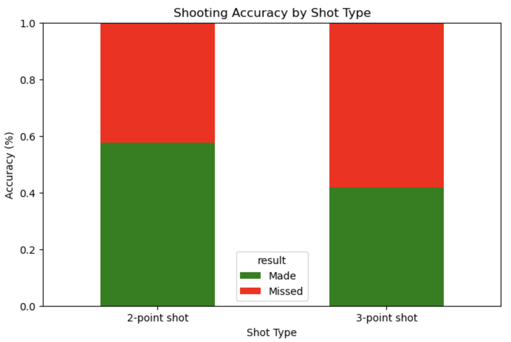
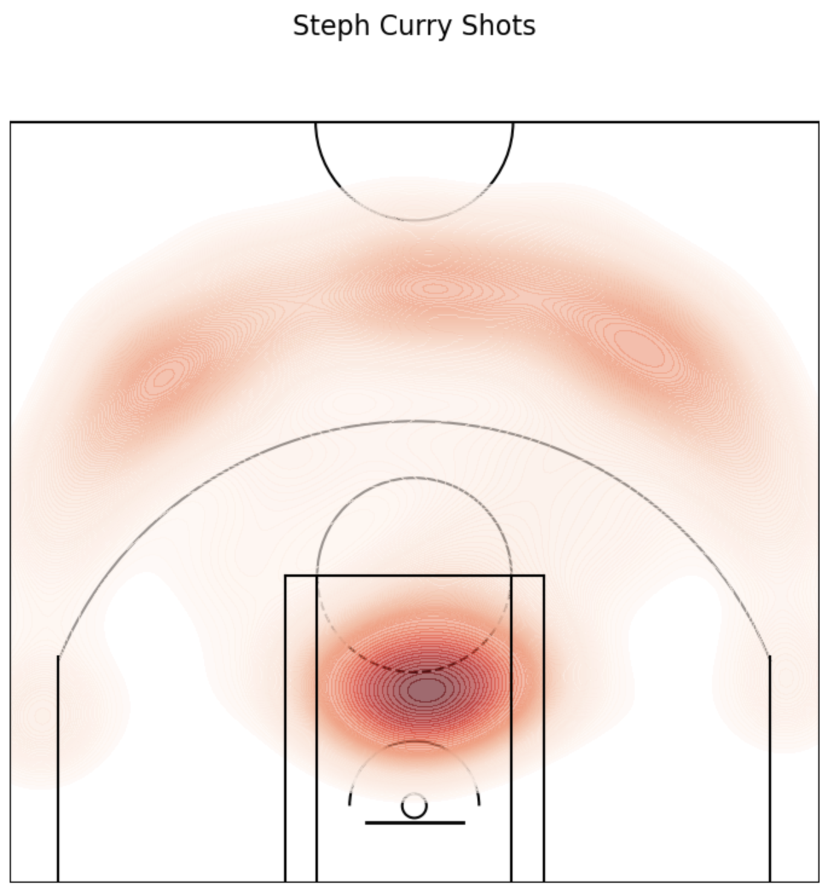

NBA Shot Visualization & Heatmap Analysis
Description: A data visualization that analyzes NBA
shot selection and performance using player-level shot attempt
coordinates for Lebron James, James Harden, and Steph Curry. The
notebook produces multiple visual insights—including bar charts,
standard shot charts, and spatial heatmaps—layered on top of a
custom-drawn NBA court. The goal is to understand shot tendencies,
efficiency, and spatial patterns.
Tools & Technologies: Python, Jupyter Notebook,
pandas, numpy, matplotlib, seaborn, data cleaning, coordinate-based shot
chart visualization
Project Structure:
- Notebook for data loading, cleaning, and visualization
- CSV file containing raw shot-level data
- Custom function for drawing NBA court graphics
- Output images: scatter shot chart, heatmap, hexbin map, distribution
plots
Problem Statement: How can we visually analyze a
player’s shooting tendencies across the court using coordinate data, and
identify where shots are taken most frequently?
Methodology:
- Loaded and cleaned raw shot-level data (made vs. missed, shot
type)
- Created exploratory visualizations (bar charts, pie charts)
- Built a custom NBA court using matplotlib shapes (arcs, rectangles,
circles)
- Plotted shot attempts to produce:
- Scatter shot chart (made vs. missed)
- Heatmap of shot density
- Hexbin map for smoothed spatial density patterns
Results:
- Complete shot chart visualizing makes/misses across the entire
court
- Heatmap and hexbin visualizations highlighting high-volume shooting
zones
- Contextual court background for clear spatial interpretation
Future Improvements:
- Add efficiency overlays (FG%, eFG% by zone)
- Integrate player comparison mode (multiple players or seasons)
- Add interactivity using Plotly Dash or Streamlit
- Build into a full web dashboard with filters for shot type, game,
quarter, etc.